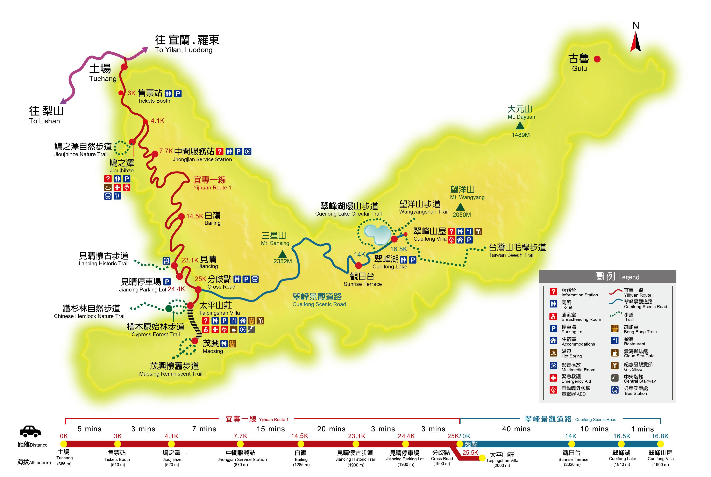
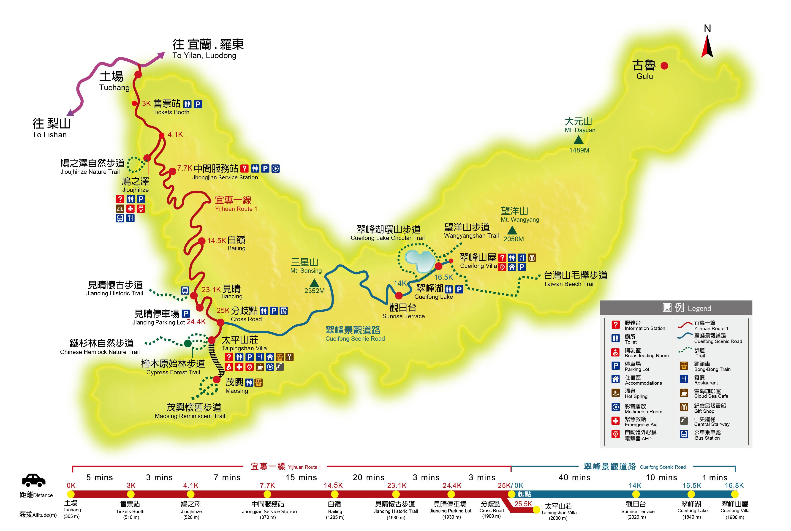

景點介紹
太平山國家森林遊樂區，是不少旅人放鬆的好去處， 尤其現在受疫情影響，這裡躍升宜蘭熱門景點。 整個森林遊樂區除了原始林相，豐富的自然景觀，也有許多條森林秘境步道等著你來挑戰。
還有森林鐵道蹦蹦車、翠峰湖，以及擁有最夢幻的淡藍色鳩之澤溫泉，也都是必到景點。 冬山這兩年有很大的變化，除了梅花湖、餵梅花鹿，你還想到什麼地方呢？十分鐘就規劃好讓小鬼累呼呼又玩到高興的行程，順帶給大家參考。
位置及交通
太平山國家森林遊樂區，是不少旅人放鬆的好去處， 尤其現在受疫情影響，這裡躍升宜蘭熱門景點。 整個森林遊樂區除了原始林相，豐富的自然景觀，也有許多條森林秘境步道等著你來挑戰。
還有森林鐵道蹦蹦車、翠峰湖，以及擁有最夢幻的淡藍色鳩之澤溫泉，也都是必到景點。 冬山這兩年有很大的變化，除了梅花湖、餵梅花鹿，你還想到什麼地方呢？十分鐘就規劃好讓小鬼累呼呼又玩到高興的行程，順帶給大家參考。
位置及交通
